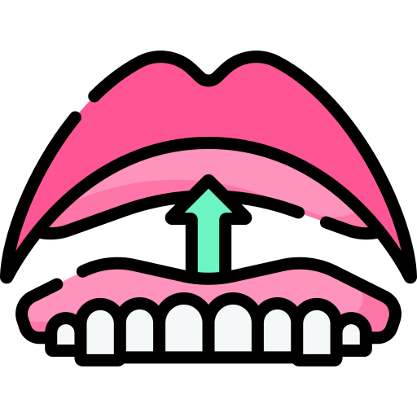
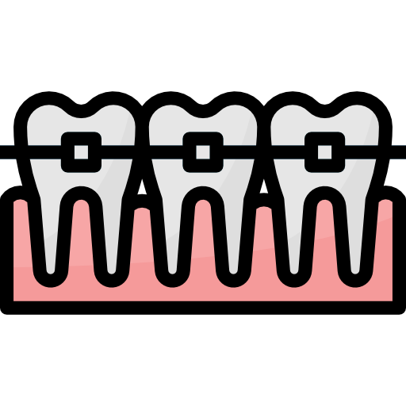
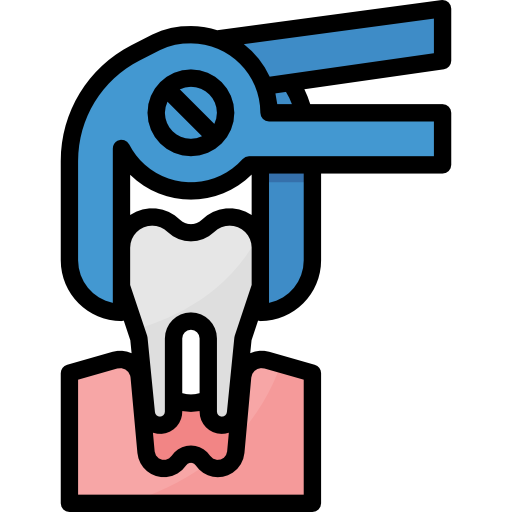
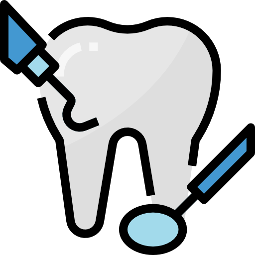
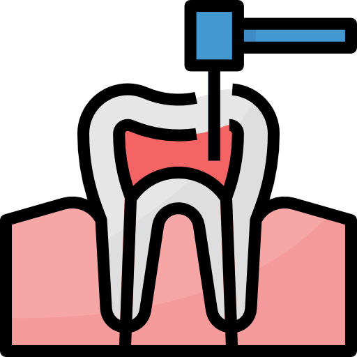

Conhecendo a Lumine Odontologia Integrada
A Lumine Odontologia Integrada é uma clinica independente a qual sua especialidade é transformar vidas e auto-estima atraves dos sorrisos.
Contamos com profissionais qualificados e horariso flexíveis que cabem na sua agenda!

Somos uma clínica independente especializada em transformar vidas e autoestima através de sorrisos perfeitos. Com atendimento personalizado por duas expertas - uma odontopediatra e outra especialista em clínico geral e próteses - já devolvemos a confiança a mais de 1.000 pacientes.
Oferecemos:
- ✓ Agendamento flexível adaptado à sua rotina
- ✓ Tecnologia de ponta com acolhimento humanizado
- ✓ Tratamentos completos desde a infância até a idade adulta
Com agendamento flexível para melhor atender sua rotina. Ja transformamos mais de 1.000 sorrisos
Na Lumine, seu sorriso é cuidado com a dedicação de quem entende que cada detalhe faz diferença. Agende sua avaliação e venha descobrir a odontologia que une excelência técnica e cuidado genuíno!
Algumas de nossas transformações
Lentes de contato
Lentes de Contato Dental são facetas ultrafinas de cerâmica que transformam seu sorriso em poucas sessões. Corrigem cor, forma e alinhamento com mínimo desgaste dental, garantindo um resultado natural e duradouro.
Ideal para quem deseja dentes perfeitos sem procedimentos invasivos. Na Lumine Odontologia Integrada, personalizamos cada lente para harmonizar com seu sorriso natural.
Agende sua avaliação e conquiste a confiança de sorrir sem preocupações!
Protocolo Dentario
Protocolo Dentário é a solução completa para quem perdeu todos os dentes. Com próteses fixas sobre implantes, devolvemos a função mastigatória e o sorriso em apenas 24 horas.
Na Lumine Odontologia, realizamos seu tratamento personalizado com planejamento digital. Volte a sorrir e comer com prazer - agende sua avaliação!
Vários tratamentos em conjunto
Para alcançar esse resultado impressionante, combinamos vários tratamentos especializados: começamos com uma limpeza profunda, seguida de restaurações com resina para corrigir formato e tamanho dos dentes, finalizando com um clareamento dental personalizado.
Essa abordagem integrada não só renova a aparência do sorriso, mas também devolve conforto e função mastigatória.
Na Lumine Odontologia Integrada, cada tratamento é cuidadosamente planejado para oferecer o melhor resultado estético e funcional, trazendo mais saúde bucal e autoestima para seu dia a dia. Agende sua avaliação e descubra como podemos transformar seu sorriso!
Tratamentos Disponíveis
Na Lumine Odontologia Integrada contamos com diversos tipos de tratamentos.
Proteses
Uma das soluções mais comuns para a perda dos dentes são as próteses dentárias, pois elas reabilitam as funções da mastigação e melhoram a estética do sorriso.
Implantes

Os implantes dentários são o tratamento mais desejado por quem precisa fazer a substituição de dentes perdidos.
Limpeza

Em muitos casos, quadros de inflamação da polpa (“nervo”) do dente ou de infecção aguda do canal geralmente causam dor ao paciente.
Aparelho
Quando uma pessoa tem dentes em má posição, o aparelho ortodôntico é o dispositivo utilizado para fazer o alinhamento e correção deles.
Clareamento

O clareamento dentário é um dos procedimentos odontológicos estéticos mais procurados atualmente.
Odontopediatria
Atendimento especializado para crianças, com foco na prevenção, cuidados com os primeiros dentinhos e acompanhamento do desenvolvimento bucal — tudo em um ambiente acolhedor e tranquilo.
Extrações
A área de cirurgia oral é a responsável por todos os atos cirúrgicos relacionados às extrações de dentes.
Restaurações
Quando um dente é afetado pela cárie e começa a perder estrutura, pode-se lançar mão das restaurações dentárias para a sua reabilitação funcional e estética.
Tratamento de canal
Em muitos casos, quadros de inflamação da polpa (“nervo”) do dente ou de infecção aguda do canal geralmente causam dor ao paciente.
Entre em contato
 Endereço: Edifício Alameda Central - R. Cel. Cabral, 576 - Sala 04 - Centro, Tubarão - SC, 88701-050
Endereço: Edifício Alameda Central - R. Cel. Cabral, 576 - Sala 04 - Centro, Tubarão - SC, 88701-050
 Telefone: (48) 98823-5400
Telefone: (48) 98823-5400
 Instagram:
@lumineodontointegrada
Instagram:
@lumineodontointegrada
 Endereço: Edifício Alameda Central - R. Cel. Cabral, 576 - Sala 04 - Centro, Tubarão - SC, 88701-050
Endereço: Edifício Alameda Central - R. Cel. Cabral, 576 - Sala 04 - Centro, Tubarão - SC, 88701-050
 Telefone: (48) 98823-5400
Instagram:
@lumineodontointegrada
Telefone: (48) 98823-5400
Instagram:
@lumineodontointegrada
Venha fazer uma avaliação!
Todos os nossos pacientes passam por uma avaliação completa, com raio-x e diversos exames e diagnósticos para avaliar assertivamente a saúde bucal e encontrar o melhor tratamento para cada paciente. Tudo isso executado por profissionais qualificados e especialistas em suas áreas.
Fale com a gente! Marque uma avaliação conversando com nossa atendente clicando no whatsapp e melhore sua saúde bucal.
Sorrir é uma conquista sua.